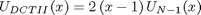

Relations between DCT_II and DST_I
Contents
Definitions
Result of transform is y=x*T, where y, x are row-vectors T is transform matrix
DST_I matrix definition

N=8; DST1=sin(pi/N*((0:N-2)+1)'*((0:N-2)+1))
DST1 =
0.3827 0.7071 0.9239 1.0000 0.9239 0.7071 0.3827
0.7071 1.0000 0.7071 0.0000 -0.7071 -1.0000 -0.7071
0.9239 0.7071 -0.3827 -1.0000 -0.3827 0.7071 0.9239
1.0000 0.0000 -1.0000 -0.0000 1.0000 0.0000 -1.0000
0.9239 -0.7071 -0.3827 1.0000 -0.3827 -0.7071 0.9239
0.7071 -1.0000 0.7071 0.0000 -0.7071 1.0000 -0.7071
0.3827 -0.7071 0.9239 -1.0000 0.9239 -0.7071 0.3827
DCT_II matrix definition
DCT2=cos(pi/N*(0:N-1)'*((0:N-1)+1/2))
DCT2 =
1.0000 1.0000 1.0000 1.0000 1.0000 1.0000 1.0000 1.0000
0.9808 0.8315 0.5556 0.1951 -0.1951 -0.5556 -0.8315 -0.9808
0.9239 0.3827 -0.3827 -0.9239 -0.9239 -0.3827 0.3827 0.9239
0.8315 -0.1951 -0.9808 -0.5556 0.5556 0.9808 0.1951 -0.8315
0.7071 -0.7071 -0.7071 0.7071 0.7071 -0.7071 -0.7071 0.7071
0.5556 -0.9808 0.1951 0.8315 -0.8315 -0.1951 0.9808 -0.5556
0.3827 -0.9239 0.9239 -0.3827 -0.3827 0.9239 -0.9239 0.3827
0.1951 -0.5556 0.8315 -0.9808 0.9808 -0.8315 0.5556 -0.1951
Finding relations
From [1] we know that DSTI matrix can be expressed in terms of Tschebyshev polynomials
where
are roots of polynomial
DCTII matrix can be analogously expressed as
where
are roots of polynomial

Because there exist relation
and
we can express DCTI through DSTII
where
B=-diag(ones(1,N))+diag(ones(1,N-1),-1); B(1,:)=1; D1=diag([1, sin(pi/N*((0:N-2)+1))]); D2=diag(cos(pi/2/N*(0:N-1)));
Check expression of DCT_II through DST_I

DST1a=eye(N);DST1a(2:end,2:end)=DST1; D2*inv(D1)*DST1a*B
ans =
1.0000 1.0000 1.0000 1.0000 1.0000 1.0000 1.0000 1.0000
0.9808 0.8315 0.5556 0.1951 -0.1951 -0.5556 -0.8315 -0.9808
0.9239 0.3827 -0.3827 -0.9239 -0.9239 -0.3827 0.3827 0.9239
0.8315 -0.1951 -0.9808 -0.5556 0.5556 0.9808 0.1951 -0.8315
0.7071 -0.7071 -0.7071 0.7071 0.7071 -0.7071 -0.7071 0.7071
0.5556 -0.9808 0.1951 0.8315 -0.8315 -0.1951 0.9808 -0.5556
0.3827 -0.9239 0.9239 -0.3827 -0.3827 0.9239 -0.9239 0.3827
0.1951 -0.5556 0.8315 -0.9808 0.9808 -0.8315 0.5556 -0.1951
Check computation of DCTII transform
x=randn(1,N) y=x*DCT2 % true result y1=x*D2*inv(D1)*DST1a*B % compute DCTII using DSTI transform
x = -0.2656 -1.1878 -2.2023 0.9863 -0.5186 0.3274 0.2341 0.0215 y = -2.7362 -2.4709 -0.3854 0.7842 1.8413 2.7057 0.5551 -2.4187 y1 = -2.7362 -2.4709 -0.3854 0.7842 1.8413 2.7057 0.5551 -2.4187
Check expression of DST_I through DCT_II
inv(D2)*D1*DCT2*inv(B)
ans =
1.0000 0 0.0000 0.0000 0.0000 0.0000 0.0000 0.0000
0.0000 0.3827 0.7071 0.9239 1.0000 0.9239 0.7071 0.3827
-0.0000 0.7071 1.0000 0.7071 0.0000 -0.7071 -1.0000 -0.7071
0.0000 0.9239 0.7071 -0.3827 -1.0000 -0.3827 0.7071 0.9239
0.0000 1.0000 0.0000 -1.0000 -0.0000 1.0000 0.0000 -1.0000
0.0000 0.9239 -0.7071 -0.3827 1.0000 -0.3827 -0.7071 0.9239
-0.0000 0.7071 -1.0000 0.7071 0.0000 -0.7071 1.0000 -0.7071
-0.0000 0.3827 -0.7071 0.9239 -1.0000 0.9239 -0.7071 0.3827
Check computation of DSTI transform
x=randn(1,N-1) y=x*DST1 % true result y1=[0 x]*inv(D2)*D1*DCT2*inv(B) % compute DSTI using DCTII transform
x = -1.0039 -0.9471 -0.3744 -1.1859 -1.0559 1.4725 0.0557 y = -2.4987 -2.6871 1.2287 -1.7412 -1.8860 2.1522 -0.8699 y1 = -0.0000 -2.4987 -2.6871 1.2287 -1.7412 -1.8860 2.1522 -0.8699
Reference
[1] Markus Pueschel, Jose M.F. Moura. The Algebraic Approach to the Discrete Cosine and Sine Transforms and their Fast Algorithms SIAM Journal of Computing 2003, Vol. 32, No. 5, pp. 1280-1316.